अध्याय 11: Adverb — कैसे, कब, कहाँ¶
Adverb (क्रिया-विशेषण) — कैसे, कब, कहाँ, कितना
Adverb वो शब्द है जो verb, adjective या दूसरे adverb के बारे में बताता है। Adjective noun को छूता है; adverb बाक़ी सबको। इसमें दो चीज़ें सबसे ज़्यादा पकड़ती हैं — पहली, -ly लगाना भूल जाना ("she speaks good"), और दूसरी, adverb को ग़लत जगह रख देना ("I always am late")। दोनों इस chapter में ठीक हो जाएँगी।
- 1Adverb के प्रकार
- 2Adverb बनाने के नियम
- 3Adverb की जगह — यहाँ सबसे ज़्यादा ग़लती होती है
- 4Adverb का comparative और superlative
- 5Adverb vs Adjective — एक सेकंड का test
- 6वो ग़लतियाँ जो हम सच में करते हैं
- 7छोटा नक्शा
एक लाइन में
An adverb modifies a verb, an adjective, or another adverb. Noun के अलावा जिसके बारे में बताया जाए — वो adverb का काम है।
- He drove carefully. Verb के बारे में — कैसे चलाया?
- The exam was very easy. Adjective के बारे में — कितना आसान?
- She sings quite beautifully. दूसरे adverb के बारे में — कितनी ख़ूबसूरती से?

11.1 Adverb के प्रकार¶
| प्रकार | सवाल | Examples | वाक्य में |
|---|---|---|---|
| Manner | कैसे? | slowly, carefully, well, badly, loudly | She writes neatly. |
| Time | कब? | now, then, today, yesterday, soon, already, yet | He left yesterday. |
| Place | कहाँ? | here, there, outside, upstairs, everywhere, nearby | Wait outside. |
| Frequency | कितनी बार? | always, usually, often, sometimes, rarely, never | I always walk to work. |
| Degree | कितना? | very, too, so, quite, almost, enough, hardly | It is too hot. |
| Affirmation / negation | हाँ या ना? | certainly, surely, definitely, not, never | I certainly agree. |
| Reason | क्यों? | therefore, hence, thus, consequently | He was ill; therefore he stayed home. |
| Interrogative | सवाल पूछना | when, where, why, how | Why are you late? |
| Relative | दो हिस्सों को जोड़ना | where, when, why | This is the place where we met. |
Interrogative और Relative adverb — वही शब्द, अलग काम¶
where, when, why (और सवाल में how) दो तरह से आते हैं। सवाल के शुरू में हो तो interrogative adverb। किसी noun (place, time, reason) के तुरंत बाद आकर उसके बारे में पूरा हिस्सा जोड़े, तो relative adverb।
| शब्द | Interrogative (सवाल) | Relative (जोड़ना) |
|---|---|---|
| where | Where do you live? | the place where we met |
| when | When does the film start? | the day when I joined |
| why | Why is she crying? | the reason why he left |
| how | How did you do it? | (relative में अक्सर नहीं — "the way" बोलो) |
- This is the café where we first met. "where" = जहाँ — जगह (café) के बारे में पूरी बात जोड़ रहा है।
- I still remember the day when I got my first job. "when" = जब — समय (day) के बाद आया।
- Tell me the reason why you are upset. "why" = क्यों — "reason" के बाद।
Relative adverb का छोटा नियम
where = in which / at which (जगह) · when = on which / in which (समय) · why = for which (कारण)।
✓ the house where I was born = the house in which I was born. Relative adverb के बाद पूरा वाक्य (subject + verb) आता है, और सवाल वाला उलटा क्रम नहीं: ✗ "the place where did we meet" → ✓ "the place where we met"।
'the way how' — double मत करो
- गलत: I like the way how she speaks.
- सही: I like the way she speaks. / I like how she speaks.
- क्यों: "the way" और "how" का मतलब एक ही है — दोनों में से एक लगाओ।
Frequency को पैमाने पर रखो
always (100%) → usually → often → sometimes → occasionally → rarely / seldom → hardly ever → never (0%)। Interview में "I sometimes make mistakes" कहना "I never make mistakes" से ज़्यादा भरोसेमंद लगता है।
11.2 Adverb बनाने के नियम¶
| Adjective कैसे ख़त्म होता है | क्या करो | Example |
|---|---|---|
| Normal | + ly | quick → quickly |
| consonant + y | y → ily | happy → happily, easy → easily |
| -le | e → y | simple → simply, gentle → gently |
| -ic | + ally | basic → basically, tragic → tragically |
| -ll | + y | full → fully, dull → dully |
| -ue | e हटाओ, + ly | true → truly, due → duly |
ये adverb -ly नहीं लेते — रूप वही रहता है
| शब्द | Adjective में | Adverb में |
|---|---|---|
| fast | a fast train | drives fast |
| hard | hard work | works hard |
| late | a late train | came late |
| early | an early bus | woke up early |
| straight | a straight line | go straight |
| high | a high wall | flew high |
"fastly" और "hardly work" दोनों ग़लत हैं — "hardly" का मतलब है बिल्कुल नहीं: He hardly works = वो काम ही नहीं करता!
-ly लगने से मतलब बदल जाने वाले जोड़े
| बिना -ly | -ly के साथ |
|---|---|
| hard = मेहनत से (He works hard.) | hardly = बिल्कुल नहीं (He hardly works.) |
| late = देर से (She came late.) | lately = हाल ही में (I haven't seen her lately.) |
| near = पास (He lives near.) | nearly = लगभग (I nearly fell.) |
| short = छोटा (Cut it short.) | shortly = जल्द ही (He will arrive shortly.) |
| high = ऊँचा (Birds fly high.) | highly = बहुत (She is highly qualified.) |
11.3 Adverb की जगह — यहाँ सबसे ज़्यादा ग़लती होती है¶
Adverb की जगह उसके प्रकार से तय होती है। चार पक्के patterns हैं, और ये चार याद हो गए तो बोलचाल अपने आप सुधर जाती है।
Frequency adverb का पक्का नियम
Main verb से पहले — I always wake up early.
"be" verb के बाद — She is always busy.
Helping verb के बाद — They have never been to Kerala. एक लाइन में: "be" के बाद, बाक़ी सब से पहले।
जगह की ग़लतियाँ
- गलत: I always am ready on time.
- सही: I am always ready on time.
-
क्यों: "be" verb (am) के बाद frequency adverb आता है — यही एक अपवाद है।
-
गलत: She speaks fluently English.
- सही: She speaks English fluently.
-
क्यों: Verb और उसके object के बीच में adverb नहीं आता। पहले काम पूरा करो (speaks English), फिर बताओ कैसे।
-
गलत: He went yesterday to the market.
- सही: He went to the market yesterday.
- क्यों: Place पहले, time बाद में — manner → place → time का क्रम।
शुरुआत में adverb — ज़ोर देने के लिए
Adverb वाक्य के शुरू में भी रखा जा सकता है, तब वो पूरे वाक्य पर असर डालता है: Suddenly, the lights went off. / Honestly, I didn't know. ऐसे वक़्त comma लगाना बेहतर है।
11.4 Adverb का comparative और superlative¶
Adjective जैसा ही है, पर एक फ़र्क के साथ: -ly वाले adverbs में हमेशा more / most लगता है।
| कैसे बनता है | Positive | Comparative | Superlative |
|---|---|---|---|
| -ly वाले → more / most | carefully | more carefully | most carefully |
| -ly वाले → more / most | quickly | more quickly | most quickly |
| छोटे (बिना -ly) → er / est | fast | faster | fastest |
| छोटे (बिना -ly) → er / est | hard | harder | hardest |
| छोटे (बिना -ly) → er / est | late | later | latest |
| Irregular | well | better | best |
| Irregular | badly | worse | worst |
| Irregular | little | less | least |
| Irregular | much | more | most |
| Irregular | far | farther / further | farthest / furthest |
- Ravi runs faster than his brother. "fast" छोटा है, इसलिए -er।
- She explained it more clearly than the teacher. "clearly" में -ly है, इसलिए more।
- Of all the students, he writes the most neatly. Superlative — तीन या ज़्यादा की तुलना।
11.5 Adverb vs Adjective — एक सेकंड का test¶
पूछो: किसके बारे में बता रहा है?
Noun के बारे में → adjective। Verb के बारे में → adverb।
a loud noise (noun) · shouted loudly (verb)
Linking verb के बाद adjective आता है, adverb नहीं
✓ The food smells good. ✗ smells well
✓ She looks tired. ✗ looks tiredly
क्योंकि ये verb subject के बारे में बता रहे हैं, काम के बारे में नहीं। एक अपवाद: He looks well = उसकी सेहत ठीक है।
11.6 वो ग़लतियाँ जो हम सच में करते हैं¶
Adverb की आम Indian-English ग़लतियाँ
- गलत: She speaks English very good.
- सही: She speaks English very well.
-
क्यों: "speaks" verb है, इसलिए adverb चाहिए — well। "good" सिर्फ़ noun के साथ: her English is good। ये जोड़ी — good/well — सबसे ज़्यादा पकड़ती है।
-
गलत: He is more taller and runs more faster.
- सही: He is taller and runs faster.
-
क्यों: "taller" और "faster" दोनों में -er पहले से comparison बना चुका है। -ly वाले adverb में more लगता है (more slowly), पर छोटे adverb में -er।
-
गलत: I always am late for meetings.
- सही: I am always late for meetings.
-
क्यों: Frequency adverb "be" verb के बाद आता है — am always, is never, are usually। बाक़ी सारे verbs से पहले: always come, never eat।
-
गलत: He drives his car fastly.
- सही: He drives his car fast.
-
क्यों: "fastly" English में शब्द ही नहीं है। "fast" ख़ुद adverb है। इसी लिस्ट में: hard, late, early, straight, high — इनमें -ly नहीं लगता।
-
गलत: She explained very nicely the problem.
- सही: She explained the problem very nicely.
-
क्यों: Verb और object के बीच adverb नहीं घुसाते। पहले "explained the problem", फिर बताओ कैसे।
-
गलत: He hardly works, that's why he got promoted.
- सही: He works hard, that's why he got promoted.
-
क्यों: "hardly" का मतलब है लगभग नहीं — उलटा मतलब हो गया! मेहनत बतानी हो तो "works hard" बोलो।
-
गलत: I am very much tired today.
- सही: I am very tired today.
-
क्यों: Adjective के साथ सिर्फ़ "very" आता है। "very much" verb के साथ चलता है: I like it very much.
-
गलत: He don't come here never.
- सही: He doesn't come here. / He never comes here.
- क्यों: दो ग़लतियाँ: "he" के साथ doesn't, और एक वाक्य में दो negative नहीं (doesn't + never)। "never" ख़ुद negative है, इसलिए उसके साथ normal verb आता है।
11.7 छोटा नक्शा¶
| Adverb का प्रकार | जगह | Example |
|---|---|---|
| Manner | object के बाद, वाक्य के आख़िर में | She read the letter slowly. |
| Frequency | main verb से पहले / "be" के बाद | He often calls. · He is often busy. |
| Time | आख़िर में (या शुरू में ज़ोर के लिए) | We met yesterday. |
| Place | manner के बाद, time से पहले | He sat quietly in the corner. |
| Degree | जिसके बारे में बता रहा है, उससे तुरंत पहले | It is too cold. |
11.8 Practice — Adverbs¶
अभ्यास 1
She speaks English very ___.
- well
- good
- better
- goodly
संकेत: 'speaks' कौन सा part of speech है?
उत्तर
well
'speaks' verb है, और verb के बारे में बताने के लिए adverb चाहिए। 'good' का adverb 'well' है — 'good' सिर्फ़ noun के साथ आता: her English is good।
अभ्यास 2
कौन सा वाक्य सही है?
- She is always on time.
- She always is on time.
- Always she is on time.
- She is on time always.
संकेत: Frequency adverb और 'be' verb का नियम।
उत्तर
She is always on time.
Frequency adverb 'be' verb के बाद आता है — is always, am never, are usually। बाक़ी सारे verbs से पहले आता है: always comes, never eats।
अभ्यास 3
He drives ___ than his father.
- faster
- more fast
- more faster
- fastly
संकेत: 'fast' में -ly है या नहीं?
उत्तर
faster
'fast' छोटा adverb है और उसमें -ly नहीं है, इसलिए -er लगता है। -ly वाले adverbs में 'more' लगता है: more carefully, more slowly।
अभ्यास 4
'He hardly works.' — इसका मतलब क्या है?
- वो काम ही नहीं करता
- वो बहुत मेहनत करता है
- वो कभी-कभी काम करता है
- वो ठीक काम करता है
संकेत: hard और hardly दो अलग शब्द हैं।
उत्तर
वो काम ही नहीं करता
'hardly' का मतलब है लगभग नहीं — ये 'hard' का adverb नहीं है। मेहनत बतानी हो तो 'works hard' बोलो, बिना -ly।
अभ्यास 5
The child was crying ___. (adverb of 'loud')
संकेत: Normal adjective में क्या लगता है?
उत्तर
loudly
Normal adjective में -ly लगाने से adverb बनता है — loud से loudly। यहाँ 'crying' verb है, इसलिए adverb चाहिए।
अभ्यास 6
She solved the puzzle ___ than I did. (comparative of 'easily')
संकेत: -ly वाले adverb में क्या लगता है?
उत्तर
more easily
-ly पर ख़त्म होने वाले adverbs में 'more' लगता है, -er नहीं। 'easilier' जैसा कोई शब्द नहीं होता।
अभ्यास 7
इस वाक्य में एक शब्द ग़लत जगह पर है — उस पर tap करो।
She speaks fluently Hindi and Marathi.
उत्तर
गलत शब्द: fluently.
सही रूप: She speaks Hindi and Marathi fluently.
Verb और उसके object के बीच adverb नहीं आता। पहले काम पूरा करो — speaks Hindi and Marathi — फिर बताओ कैसे।
अभ्यास 8
ग़लत शब्द ढूँढो।
He drives his new car very fastly.
उत्तर
गलत शब्द: fastly.
सही रूप: He drives his new car very fast.
'fastly' English में शब्द ही नहीं है — 'fast' ख़ुद adverb है। इसी लिस्ट में hard, late, early, straight भी हैं।
अभ्यास 9
एक शब्द ग़लत जगह पर है।
I always am ready before eight.
उत्तर
गलत शब्द: always.
सही रूप: I am always ready before eight.
'be' verb (am) के बाद frequency adverb आता है — यही एक अपवाद है। बाक़ी verbs में adverb पहले: I always wake up early।
अभ्यास 10
'This is the school where my father studied.' — यहाँ 'where' क्या है?
- relative adverb
- interrogative adverb
- adverb of place
- preposition
संकेत: ये सवाल है या noun के बाद जोड़ रहा है?
उत्तर
relative adverb
'where' noun 'school' के बाद आकर उसके बारे में पूरा हिस्सा जोड़ रहा है — relative adverb। 'Where did he study?' में वो सवाल पूछ रहा होता — interrogative।
अभ्यास 11
I will never forget the day ___ we won the cup.
संकेत: समय (day) के बाद कौन सा relative adverb?
उत्तर
when
समय के noun (day, year, time) के बाद 'when'। जगह के बाद 'where', कारण (reason) के बाद 'why'।
अभ्यास 12
एक शब्द फ़ालतू है — उस पर tap करो।
I love the way how my mother cooks.
उत्तर
गलत शब्द: how.
सही रूप: I love the way my mother cooks.
'the way' और 'how' का मतलब एक ही है — दोनों साथ नहीं आते। 'the way my mother cooks' या 'how my mother cooks'।
अभ्यास 13
Adverb को उसके प्रकार से जोड़ो।
| A | B |
|---|---|
| slowly | place — कहाँ |
| yesterday | frequency — कितनी बार |
| outside | degree — कितना |
| rarely | manner — कैसे |
| almost | time — कब |
उत्तर
slowly — manner — कैसे; yesterday — time — कब; outside — place — कहाँ; rarely — frequency — कितनी बार; almost — degree — कितना
Adverb का प्रकार उस सवाल से तय होता है जिसका वो जवाब देता है। और प्रकार से ही उसकी वाक्य में जगह तय होती है।
अभ्यास 14
सही क्रम में वाक्य बनाओ — manner, place, time का क्रम याद रखो।
शब्द: concert / the / at / last / beautifully / played / He / night
उत्तर
He played beautifully at the concert last night
कई adverbs एक साथ आएँ तो क्रम होता है manner (कैसे) → place (कहाँ) → time (कब)। ये क्रम तोड़ने से वाक्य अजीब लगता है।
अभ्यास 15
ये लाइन बोल के देखो — 'well' साफ़ बोलना है, 'good' नहीं।
She speaks English very well
उत्तर
बोलो: She speaks English very well
हम लोग 'very good' बोलने की आदत में 'well' छोड़ देते हैं। ज़ोर से 'well' बोलने की practice से ये आदत टूटती है।
आगे क्या करो
आज से जब भी "good" बोलने का मन करे, पूछो — "क्या मैं किसी काम के बारे में बता रहा हूँ?" अगर हाँ, तो "well" बोलो। अगला chapter Preposition है, और उसके बाद Conjunction।